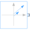

ComplexRampPhasorGenerate a phasor with ramped magnitude and constant angle |

|
Information
This information is part of the Modelica Standard Library maintained by the Modelica Association.
The output y is a complex phasor with constant angle and a ramped magnitude.
In case of useLogRamp == false the magnitude ramp is linear:

In case of useLogRamp == true the magnitude ramp appears linear on a logarithmic scale:

Parameters (6)
| magnitude1 |
Value: Type: Real Description: Magnitude of complex phasor at startTime |
|---|---|
| magnitude2 |
Value: Type: Real Description: Magnitude of complex phasor at startTime+duration |
| useLogRamp |
Value: false Type: Boolean Description: Ramp appears linear on a logarithmic scale, if true |
| phi |
Value: Type: Angle (rad) Description: Angle of complex phasor |
| startTime |
Value: 0 Type: Time (s) Description: Start time of frequency sweep |
| duration |
Value: Type: Time (s) Description: Duration of ramp (= 0.0 gives a Step) |
Connectors (1)
| y |
Type: ComplexOutput Description: Connector of Complex output signal |
|---|
Used in Examples (5)
|
Modelica.Magnetic.QuasiStatic.FluxTubes.Examples.BasicExamples Educational example: iron core with airgap |
|
|
Modelica.Magnetic.QuasiStatic.FluxTubes.Examples.BasicExamples Educational example: iron core with airgap |
|
|
ToroidalCoreQuadraticCrossSection Modelica.Magnetic.QuasiStatic.FluxTubes.Examples.BasicExamples Educational example: iron core with airgap |
|
|
Modelica.Magnetic.QuasiStatic.FluxTubes.Examples.FixedShapes Magnetic circuit using different cylinder sections |
|
|
Modelica.Magnetic.QuasiStatic.FluxTubes.Examples.FixedShapes Magnetic circuit using different cuboid sections |